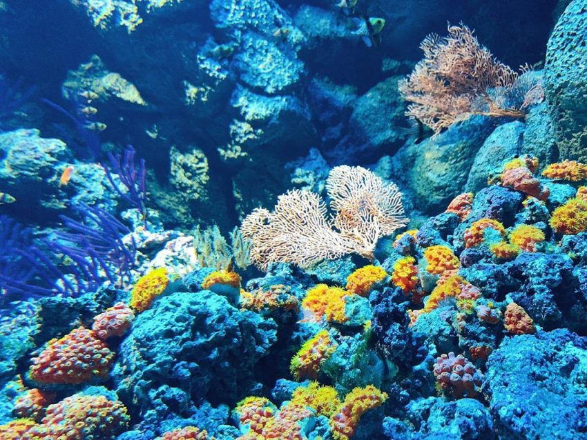
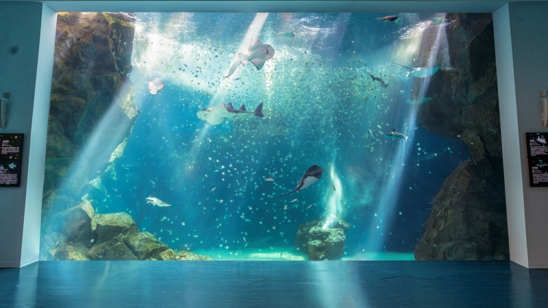
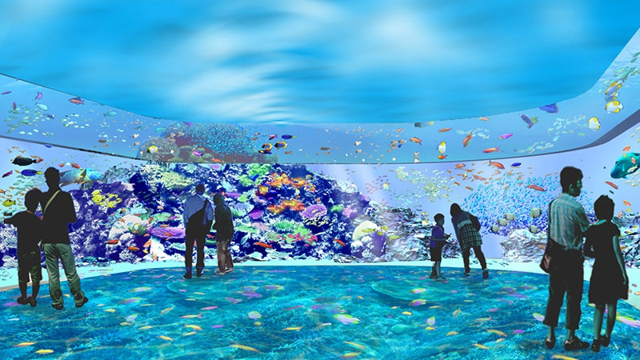

As we reopen, we need to manage our capacity to ensure everyone has a safe and enjoyable visit. The best way to do this is to ensure that all of our visitors are pre-booked, including those with passes, already in possession of tickets or wishing to use a promotional voucher.
Pre-booking essential
2020.10.18

Dismisses accusations of animal abuse
2020.10.15

Xpark in a statement rejected allegations of animal abuse, saying it has adopted rigorous standards to attend to the animals.
As the aquarium has more than 10,000 marine animals, there might be occasional injuries or some creatures might still be adapting to their new environment.
The aquarium would improve its public communication and promotion of ocean life, it said, but added that it would take legal action against false accusations.
Covid19-Information for guests
2020.9.15

We are open- and we can't wait to 'sea' you! We love bringing you closer to the oceans through amazing discoveries! Since we closed in March, we’ve been working tirelessly to make sure that we can welcome you back in the safest way possible.
Our team of health and safety experts have created a plan which will enable us to deliver on our promise of keeping your well-being and safety as our top priority. Some of the measures may be clearly visible to you from the moment you arrive at the attraction and others require consideration from our guests to help ensure everyone has a magical visit.
Welcome our newborn penguin chick!
2020.9.02

One newly hatched penguin chick born recently at Xpark haven't been given name.
Due to the current ongoing coronavirus pandemic, Xpark decides to pay tribute by using the NHS as the theme when it comes to naming the new baby.
They appeals to the whole country for suggestions of NHS hospitals and heroes that the chick could be named after, and is inundated with suggestions of hospitals from across the whole country.
Special exhabition
Incredible documentary
photography exhibition shows reality of life at sea2020.9.20

Aquarium staff say they have started noticing our chick has its own personality.
Chick is a calmer bird who seems to adjust to new experiences quickly, while Chick.
Zookeepers have narrowed down the choices to three sets of names: Clark & Eddie (from the movie "A Christmas Vacation") Gilbert & Linus (in honor of the NEW Zoo's veterinarian, Dr. Gilbert) Raul & Marco (inspired by penguins in books and movies) To vote for your favorite, go online.
Voting will end Nov. 10, with the winning names announced Nov. 12.
The aquarium will have a very seasonal look to celebrate the holiday, featuring fun photo backgrounds and special unscheduled animal encounters.
You'll also want to keep all eyes on the tanks, as decorations have been placed throughout the habitats. You might even get a special visit from a real-life swimming skeleton! (It's just a diver in a skeleton costume but don't tell the kids)
The aquarium is also holding a virtual costume contest that can be entered from anywhere.
The exhibition including scenography, all exhibits and all media are shipped in one 40-foot container to the venue.
The exhibition can easily be adapted to local circumstances. Furthermore Xpark provides templates for all texts and information graphics which are shown in the exhibition as printable files.
In addition to that, Xpark provides consultation on the set-up and planning of the exhibition according to the specifics of the venue, and assists in developing an educational program if necessary.
Xpark has announced its 'Exposure: Lives at Sea' exhibition, which will showcase incredible documentary photography exploring life at sea today. Opening on 20 September, 2020, this exhibition will focus on "isolation and camaraderie, science and survival, climate change and conservation – the lived experience of men and women at sea".
We have teamed up for a limited-edition T-shirt collaboration for Uniqlo that will be released later this month.
The UT collection will showcase the artistic perspectives of the two through graphics combining their styles, which were exclusively designed for Uniqlo.